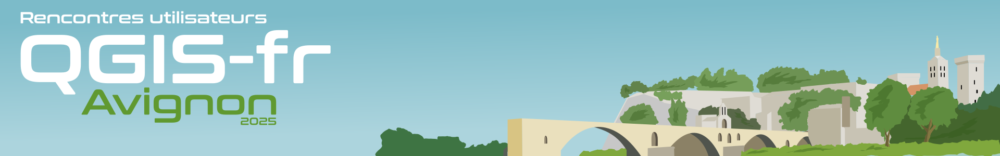
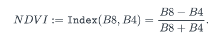
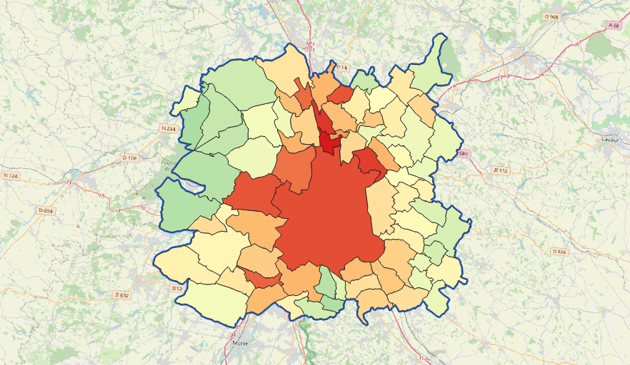
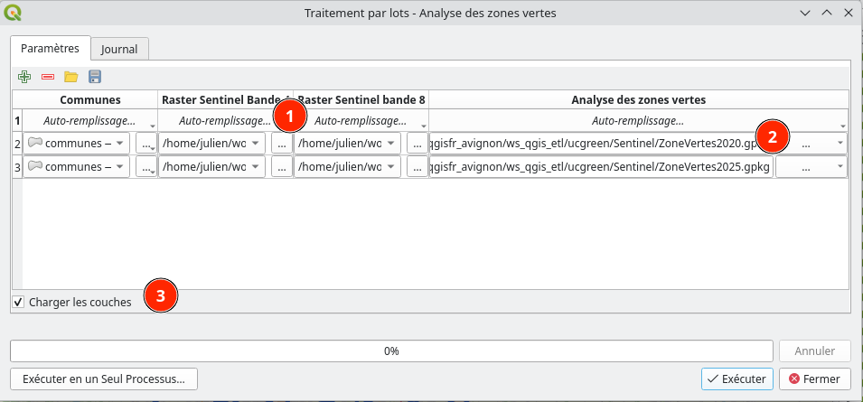
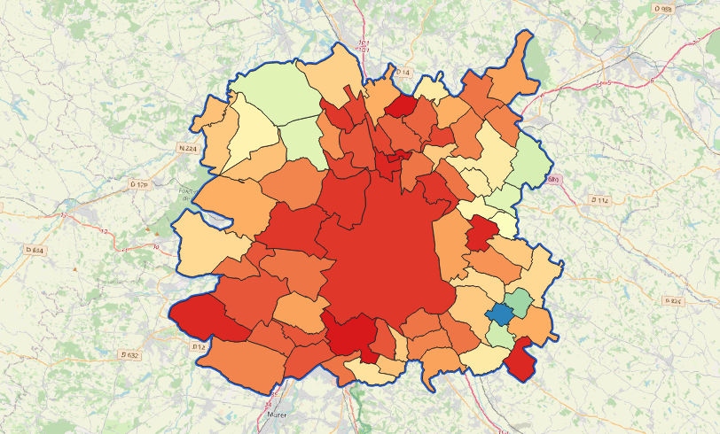
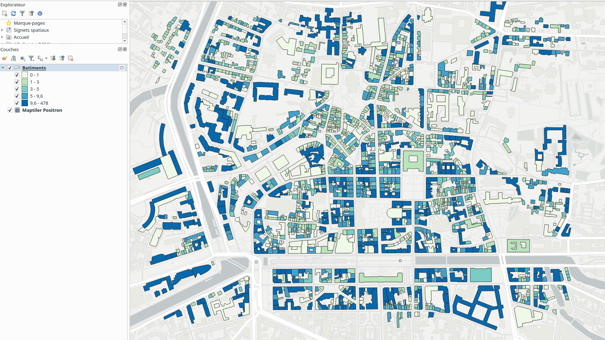
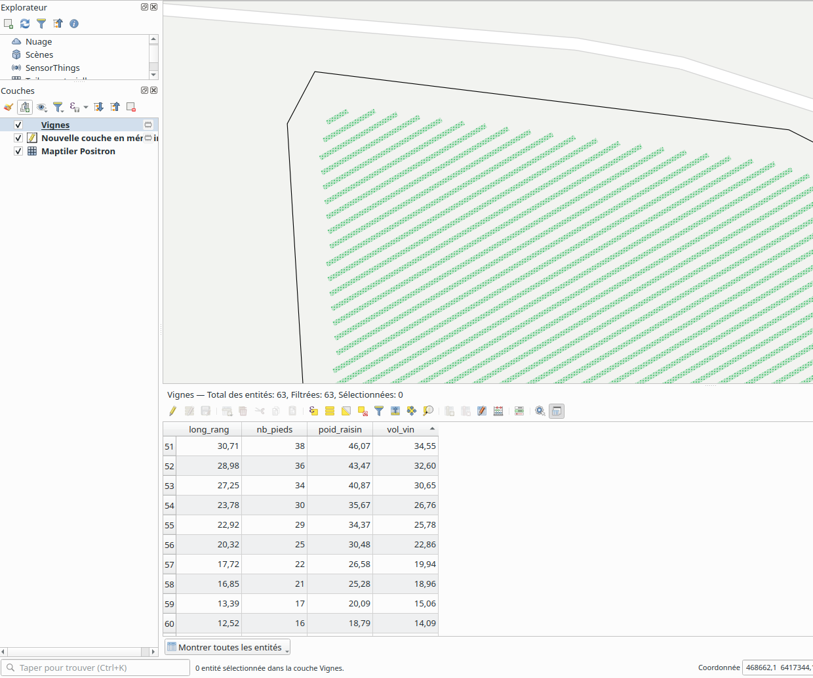

<style> img { margin:0 !important; vertical-align:top !important; } table td { border-bottom: 0 !important; padding-left: 0 !important; vertical-align:top !important; } </style> ## QGIS comme ETL Rencontres des Utilisateurs Francophones de QGIS<br/> Avignon - 10/06/2025 </td><td></img></td> Florent Fougères / Julien Cabieces --- ### Qui sommes nous ? <table vertical-align="middle"> <tr><td></td> <td> Florent Fougères<br/> Géomaticien / Developpeur SIG<br/> Contributeur Plugin QGIS (QDuckDB, QWC, QSFCGAL)</b><br/> <img text-align="center" src="github_logo.svg" height="32" width="32"/><em>@florentfougeres</em><br/> <em>@florentfgrs@mastodon.social</em> </td> </tr> </table> <table vertical-align="middle"> <tr> <td> Julien Cabieces<br/> Developpeur C++/Python<br/> QGIS Core committer<br/> <img text-align="center" src="github_logo.svg" height="32" width="32"/><em>@troopa81</em><br/> <em>@CabiecesJ@mapstodon.space</em> </ul> </td> <td><img text-align="center" src="juc_rond.png" height="250" /></td> </tr> </table> --- ## Plan de l'atelier 3 cas d'usages: - Use Case 1 : Taux de végétation - Use Case 2 : Nombre d'habitants par batiment - Use Case 3 : Agencement de plan de vignes --- ## Use Case 1 : Zones vertes Calculer pour chaque commune le pourcentage du territoire recouvert par de la végétation --- ### Prérequis - Télécharger le projet [ici](ucgreen/ws_qgis_etl.qgz) - Télécharger les images Sentinel [ici](https://share.oslandia.net/s/Z3Tw5dE7KbXRBRN) - Extraire les images Sentinel à côté du projet - Ouvrir le projet ... --- ### Origine des données - Images Sentinel téléchargées [ici](https://browser.dataspace.copernicus.eu/) - Sentinel 2 (résolution 10m) - S2B_MSIL2A_xxxx.SAFE/GRANULE/L2A_xxx/IMG_DATA/R10m/xxxx_B08_10m.jp2 - Communes téléchargées [ici](https://www.data.gouv.fr/fr/datasets/decoupage-administratif-communal-francais-issu-d-openstreetmap/) --- ### A voir dans ce use case - Raster - Reprojection - Aggregate expression - Style - Boucle --- ### Le traitement - Découper les raster Sentinel (bandes 4 et 8) avec les communes - En profiter pour reprojeter - Reprojeter les communes - Calculatrice raster - Polygoniser - Lisser - Réparer les géométries - Calculatrice de champs *Projection Cible*: Lambert93 - 2154 --- ### Calculatrice raster La [formule](https://custom-scripts.sentinel-hub.com/custom-scripts/sentinel-2/ndvi/)  Dans la calculatrice de champs, ça donne ```qgis if((("A@1" - "B@1")/("A@1" + "B@1")) > 0.40, 1, 0/0) ``` - Seuil de **0.40** donné à titre indicatif - Peut être un paramètre entrée - Pour [régler](https://eos.com/fr/make-an-analysis/ndvi/) le seuil - Attention à l'ordre des couches d'entrées - ici, A = Bande 8, B = Bande 4 )!! --- ### Lisser - Paramètres qui fonctionne *chez moi* ©️ - Itération **1** - Décalage **0.5** --- ### Calculatrice de champs ```qgis (aggregate(@Nom_de_mon_algo_de_correction_des_geoms_OUTPUT,'sum', area(intersection( @geometry, geometry(@parent))), intersects( @geometry, geometry(@parent) ) ) / area(@geometry) ) * 100 ``` ⚠️ Penser à sélectionner l'algorithme de réparation des géométries dans les dépendances --- ### Style automatique - Créer un style gradué - Choisir une palette, le champs généré et classer (Intervalles fixes) - Ajouter le modèle dans la bibliothèque de traitement - Définir le style par défaut - clic droit sur le traitement > Éditer les styles de rendu pour les sorties --- ### Résultat  <br/> - Modèle [green.model3](ucgreen/green.model3) - Fichier de style: [style.qml](ucgreen/style.qml) --- ### Boucle : Traitement par lots  - 1. Sélectionner des fichiers - 2. Choisir un nom de fichier - 3. Cocher le chargement des couches --- ### Boucle : Une VRAI boucle (en Python 🐍 ) Exemple: Avoir un champs taux de végétation par annéé pour visualiser l'évolution - Faire un nouveau modèle - Ajouter le précédent modèle - Cabler les entrées/sorties - Exporter comme algorithme scriptée - Ajouter un boucle For python 🐍 --- ### Boucle : Une VRAI boucle (en Python 🐍 ) - [Solution](ucgreen/example_for.py) qui marche ```python for i, (B4, B8) in enumerate(zip(rastersB4, rastersB8)): # last model call should output in our defined out, the other one in temporary output alg_output = (QgsProcessing.TEMPORARY_OUTPUT if i<len(rastersB4)-1 else parameters['Zonesvertes']) alg_params = { 'communes': communes, 'raster_sentinel_bande_4': B4, 'raster_sentinel_bande_8': B8, 'analyse_des_zones_vertes': alg_output, 'nom_du_champs' : f"green_area_{i}" } # kind of a bug here, we need to clear model result, if not QGIS could consider the model # algorithms already run context.clearModelResult() new_layer = processing.run('model:Analyse des zones vertes', alg_params, context=context, feedback=feedback, is_child_algorithm=True) ``` --- ### Résultat  Voir le [style](ucgreen/style_evolution.qml) --- ## Use Case 2 : Nombre d'habitants par bâtiment L'objectif est de définir le nombre d'habitants par bâtiment en ventilant les données de population du carroyage de l'INSEE à 200. --- ### Les données - Une couche bâtiment du portail Open Data de Rennes Métropole (plateforme opendatasoft) - Une couche du carroyage de l'INSEE issue de Public opendatasoft Dans ce processing on ne va pas aller télécharger les données mais aller directement les télécharger dans le processing via l'API d'opendatasoft. Si vraiment l'API ne marche pas, les données sont [ici](https://share.oslandia.net/s/iHCLSwpyEDiKLjg?path=%2FUC2)/ --- ### À voir dans ce use case - Télécharger des données depuis une API - Utiliser une entrée de type extend et la convertir en requête API - Jointures spatiales - Statistiques --- ### Les inputs - Emprise d'étude (doit être sur Rennes) - URL de l'API opendatasoft de Rennes Métropole : `https://data.rennesmetropole.fr/api/explore/v2.1` - Nom du jeu de données bâtiments : `referentiel-batiment-et-ses-donnees-descriptives-sur-rennes-metropole` - URL de l'API Public opendatasoft : `https://public.opendatasoft.com/api/explore/v2.1` - Nom du jeu de données carroyage 200m : `demographyref-france-donnees-carroyees-200m` - Fichier de style (.qml) --- ### Les grandes étapes - Transformer l'emprise en WKT - Construire les URLs API - Télécharger les données - Calcul du nombre d'habitants par bâtiment - Appliquer un style et charger le résultat --- ### Transformer l'emprise en WKT :warning: Il y a une limite dans QGIS : il n'est pas possible d'exploiter directement une entrée de type input dans une expression. On va donc devoir trouver une solution de contournement. - Créer une couche à partir de l'étendue - Reprojeter (en 4326 car c'est dans cette projection que l'API attend l'emprise) - Calculer l'expression : - L'objectif ici est de créer une variable : l'emprise au format WKT - Expression : `geom_to_wkt( geometry(get_feature_by_id(@emprise_4326_OUTPUT,1)))` --- ### Construire les URLs API - Calculer l'expression - Pour les bâtiments ```qgis @api_url_rennes_mtropole_opendatasoft || '/catalog/datasets/' || @nom_du_jeu_de_donnes_batiments || '/exports/geojson?where=intersects(geo_shape%2C%20geom'''|| @WKT_emprise_OUTPUT ||''')' ``` - Pour le carroyage ```qgis @api_url_public_opendatasoft || '/catalog/datasets/' || @nom_du_jeu_de_donnes_carroyage_insee_200m || '/exports/geojson?where=intersects(geo_shape%2C%20geom'''|| @WKT_emprise_OUTPUT ||''')' ``` Exemple : ```url https://data.rennesmetropole.fr/api/explore/v2.1/catalog/datasets/referentiel-batiment-et-ses-donnees-descriptives-sur-rennes-metropole/exports/geojson?where=intersects(geo_shape%2C%20geom'Polygon ((-1.68870192 48.10857495, -1.67131311 48.10857495, -1.67131311 48.11679832, -1.68870192 48.11679832, -1.68870192 48.10857495))') https://public.opendatasoft.com/api/explore/v2.1/catalog/datasets/demographyref-france-donnees-carroyees-200m/exports/geojson?where=intersects(geo_shape%2C%20geom'Polygon ((-1.68870192 48.10857495, -1.67131311 48.10857495, -1.67131311 48.11679832, -1.68870192 48.11679832, -1.68870192 48.10857495))') ``` --- ### Télécharger les données - Télécharger le fichier via HTTP(S) > Lors de l'utilisation de ce processing, il faut que les téléchargements fournissent un geojson, sinon il n'est pas interprété comme un layer. Là encore, il s'agit d'une limite QGIS. - Assigner la projection 4326 > Comme il s'agit d'un geojson, il faut mieux s'assurer que QGIS comprenne bien la projection. L'API fournit du 4326. - Reprojection en 214 - Soulever une exception - Pour arrêter le processing si les téléchargements échouent ou ne renvoient rien. - Expression : ```qgis layer_property( @Assigne_projection_batiments_OUTPUT , 'feature_count') = 0 or layer_property( @Assigne_projection_carroyage_OUTPUT , 'feature_count') = 0 ``` --- ### Calcul du nombre d'habitants par bâtiment - Centroïdes de bâtiments > Afin d'être sûr d'associer un bâtiment à un seul carreau - Joindre les attributs par localisation (résumé) > On connaît la surface habitable de chaque bâtiment via le champ `surf_locaux_hab`. On calcule alors la surface habitable de chaque carreau. *Attention à fixer l'emprise de manière à avoir tous les bâtiments d'un carreau*. - Calculatrice de champs > Calculer le nombre d'habitants par m² habitable dans chaque carreau : `"pop_carr" / "surf_locaux_hab_sum"` - Joindre les attributs par localisation > Joindre à chaque bâtiment le nombre d'habitants par m² habitable du carreau dans lequel il se situe. - Calculatrice de champs > Calcul du nombre d'habitants dans chaque bâtiment : `round("surf_locaux_hab" * "hab_m2")` --- ### Appliquer un style et charger le résultat - Appliquer le style - Charger la couche dans le projet --- ### Résultat  <br/> - Modèle [bati.model3](ucbati/bati.model3) - Fichier de style: [style.qml](ucbati/style.qml) --- ## Use Case 3 : Agencement de plan de vignes L'objectif est, sur une parcelle donnée, d'automatiser le tracé de rangs de vigne selon des paramètres de taille, d'espacement et d'orientation, et enfin de calculer des rendements théoriques. --- ### À voir dans ce use case - Buffer négatif - Création de grille - Génération de géométrie - Translation - Refactoriser les champs - Branche conditionnelle --- ### Les inputs #### Couche vecteur - Couche polygone contenant la ou les parcelles d'étude #### Variables - Marge autour de la parcelle - Espacement entre rangs - Largeur d'un rang de vigne - Orientation des rangs (degrés) - Rendement de raisin par mètre linéaire de vigne (kg) - Nombre de pieds (ceps) par mètre linéaire - Nombre de litres de vin par kilo de raisin - Fichier de style (.qml) --- ### Les grandes étapes - Créer un buffer négatif avec la marge - Créer une emprise large autour de la parcelle - Créer une grille et les géométries - Faire la rotation - Découper dans le buffer négatif - Exécution des calculs - Appliquer un style si un style est fourni et charger le résultat --- ### Créer un buffer négatif avec la marge - Buffer > Pour prendre en compte la marge autour de la parcelle. Pas possible de faire un "-" devant, il faut multiplier par -1. --- ### Créer une emprise large autour de la parcelle - Buffer du double du côté maximal de l'étendue > Pour être sûr que les géométries générées couvrent toute la parcelle après la translation. --- ### Créer une grille et les géométries - Créer une grille > Créer une grille de points avec un espacement horizontal de 1 et un espacement vertical prenant en compte les paramètres pour gérer l'espacement des rangs (attention à prendre en compte la largeur du rang). - Rectangles, ovales, diamants > Créer des rectangles autour des points. La hauteur est la largeur d'un rang de vigne. --- ### Faire la rotation L'objectif ici est de faire la rotation. :warning: L'algo de rotation ne fait pas ce qu'on souhaite : il va juste tourner les entités en place, ce n'est pas ce que nous voulons. - Transformation affine (en 3 étapes) - Translation des x et y, sinon on va tourner autour de 0;0 - x : `-1 * ( @Emprise_large_OUTPUT_minx + @Emprise_large_OUTPUT_maxx ) / 2` - y : `-1 * ( @Emprise_large_OUTPUT_miny + @Emprise_large_OUTPUT_maxy ) / 2` - Rotation - Re-translation vers le point de départ - x : `( @Emprise_large_OUTPUT_minx + @Emprise_large_OUTPUT_maxx ) / 2` - y : `( @Emprise_large_OUTPUT_miny + @Emprise_large_OUTPUT_maxy ) / 2` --- ### Découper dans le buffer négatif - Extraire par localisation - Regrouper - De morceaux multiples à morceaux uniques --- ### Exécution des calculs - Refactoriser les champs : - Longueur du rang : `max(x_max($geometry) - x_min($geometry), y_max($geometry) - y_min($geometry))` - Nombre de pieds : `round(max(x_max($geometry) - x_min($geometry), y_max($geometry) - y_min($geometry)) * @nombre_de_pieds_ceps_par_mètre_linaire)` - Poids de raisin : `max(x_max($geometry) - x_min($geometry), y_max($geometry) - y_min($geometry)) * @rendement_de_raisin_par_mètre_linaire_de_vigne_kg` - Volume de vin : `(max(x_max($geometry) - x_min($geometry), y_max($geometry) - y_min($geometry)) * @rendement_de_raisin_par_mètre_linaire_de_vigne_kg) * @nombre_de_litres_de_vin_par_kilo_de_raisin` --- ### Appliquer un style si un style est fourni et charger le résultat - Branche conditionnelle > On applique un style uniquement s'il est fourni - Envoyer un avertissement > Si le fichier fourni n'est pas un .qml - Charger la couche dans le projet --- ### Résultat  <br/> - Modèle [vigne.model3](ucvigne/vigne.model3) - Fichier de style : [style.qml](ucbati/style.qml) --- ## Questions Rencontres des Utilisateurs Francophones de QGIS<br/> Avignon - 10/06/2025 </td><td></img></td> Florent Fougères / Julien Cabieces